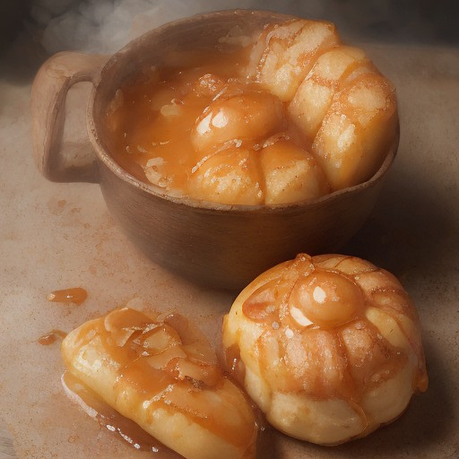

デザート
焼き芋×とろけるバターカラメル：悪魔の甘辛スパイシーデトックス！

焼き芋の甘さと、とろけるバターカラメルの組み合わせは、まさに悪魔の美味しさ。スパイシーなスパイスで、デトックス効果も抜群！
💡 こんな時・こんな人におすすめ！
特別な日に、ゆっくりと味わいたい一品
📋 必要な材料（ポストイット風）
材料リスト 1
- 焼き芋2個
- バター100g
- 砂糖大さじ2
材料リスト 2
- 塩コショウ少々
- スパイス (例: ジンジャー, クミン, パプリカ, etc.)お好みで
🍳 作り方ステップ
1
1. 焼き芋を皮ごと、小さめに切り、オーブンで20分ほど焼きます。
2
2. melted butter with sugar and salt to a paste.
3
3. 焼き芋をボウルに入れ、バターパウダーを混ぜます。
4
4. フライパンでバターを熱し、焼き芋を炒めます。スパイスを加えて混ぜながら煮詰めます。